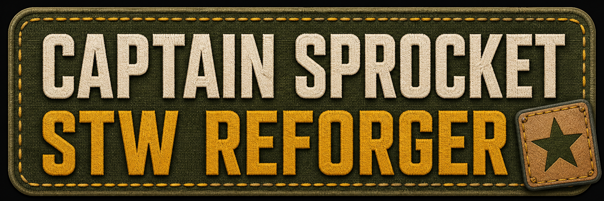

Start with the simple picture
Think of the ecosystem as a campaign machine. The core supplies rules for occupied places and combat. Extensions add objectives, movement, pressure and content. Bridges let two established systems exchange a specific capability. Adapters translate one system’s events or data into another system’s public contract.
Architecture map
Arrows show responsibility and information flow. This is a mental model, not a strict launcher load-order command.
Main and extension packages
Main: STWVeniVidiVici
Foundation package. Installs STW Divide and Conquer, the campaign/combat framework and CQB encounter logic that makes towns, compounds and objectives feel occupied.
Core
Support: Systems
Shared services, orchestration and integration points. It is the connective tissue that lets several modules behave like one server-led operation.
Core support
Extension: Bases
Base, stronghold and defensive-position geography: places to advance, defend, flank and use as campaign objectives.
Optional
Extension: Reinforcements
Logic and content for bringing additional units and support into active operations, so captured objectives continue to generate pressure.
Optional
Extension: Helicopters
Aircraft content, transport and landing-zone operations. It links bases and front lines through air mobility.
Optional
Extensions: Extras One / Two
Additional vehicles, equipment, factions, specialist assets and scenario-building pieces. They broaden what the systems can use.
Optional
Bundle: Full Edition
A convenience package containing the complete VVV ecosystem: core, Bases, Reinforcements, Helicopters, Systems and extra content. It is a packaging choice, not a second core.
All-in-one
Bridges and adapters
A bridge connects two systems that already share a meaningful concept. An adapter translates one system’s vocabulary into another system’s public contract. Neither should own the source feature it connects.
| Connector | Connection | Job | If omitted |
|---|---|---|---|
| STWBasesDACIntegration adapter | BasesGenerator ↔ D&C | Translates D&C owned/frontline and shoreline cells into generic Bases placement areas. | Bases and Crates remain independent; no D&C-aware placement. |
| STWBasesCratesIntegration integration | Bases ↔ Crates | Listens to the generic base-removal event so crate behavior follows base lifecycle without knowing D&C. | No base-to-crate lifecycle integration. |
| STWFPVDroneDACAdapter adapter | FPV Drone ↔ D&C surveillance | Converts server-authoritative drone detections into the surveillance-bridge contract; owns no drones. | FPV Drone still works standalone; no D&C response. |
| STWFPVDroneEnvironmentAdapter adapter | FPV Drone ↔ environment rules | Validates drone routes against environment rules and hooks into that contract. | Standalone drone controller remains unchanged. |
| STWCombatZoneCKnowledgeAdapter adapter | Combat Zones ↔ CombatKnowledge | Publishes combat-zone information in the shared perception vocabulary. | Zones do not contribute to CombatKnowledge through this path. |
| STWDACHeavyWeaponBridge bridge | D&C ↔ Heavy Weapons | Exposes heavy-weapon support as a capability the campaign can use. | Both systems remain usable separately. |
| STWDACSurveillanceBridge bridge | D&C ↔ surveillance sources | Provides the surveillance notice/response path for compatible sources such as drone detections. | No cross-system surveillance response. |
| STWStrongholdHWeaponsBridge bridge | Stronghold ↔ Heavy Weapons | Hooks heavy-weapon support into stronghold behavior when that capability exists. | Stronghold and Heavy Weapons work without this connection. |
Soft dependencies, case by case
Keep two lists separate: project dependencies are engine-level resources declared by a package; soft gameplay dependencies are optional companions that improve behavior.
| Case | With companion | Without companion |
|---|---|---|
| VVV / CombatKnowledge | Shared perception improves strategic CQB and stronghold reactions. | VVV can run, but tactical reactions and encounter quality may be reduced. |
| VVV / extension packs | Core plus selected packs creates broader objectives, pressure, air mobility and content. | Core still works; the omitted pack contributes none of its content. |
| FPV Drone / D&C adapter | Drone detections enter the D&C surveillance response path. | FPV Drone stays standalone. |
| Bases / D&C adapter | Placement can use D&C ownership/frontline and shoreline information. | Generic Bases placement and lifecycle still work. |
| Stronghold or D&C / Heavy Weapons bridge | Heavy-weapon capability becomes visible to compatible logic. | Source systems work, but the cross-system behavior is absent. |
Choosing an installation shape
Minimal
Start with STWVeniVidiVici. Add Systems and only the extensions your scenario needs.
Selective
Core + Bases + Reinforcements gives objectives and pressure. Add Helicopters for air mobility and Extras for variety.
Complete
Use Full Edition for the whole family, then add connectors only for external systems you actually run.
Integration server
Verify standalone systems first, then add one bridge or adapter at a time. This makes missing contracts easy to identify.
Reading a problem by its shape
| Symptom | Likely meaning | First check |
|---|---|---|
| Campaign starts but feels quiet | Core is present, but a selected content pack or recommended companion is missing. | Check VVV, extensions and CombatKnowledge. |
| Base placement ignores frontline ownership | Bases-to-D&C adapter is absent or inactive. | Check STWBasesDACIntegration. |
| Drones work but do not trigger campaign surveillance | Standalone source is present, but its adapter/bridge is absent. | Check FPV adapter and D&C surveillance bridge. |
| Strongholds lack heavy-weapon behavior | Bridge or source capability is missing. | Check STWStrongholdHWeaponsBridge and Heavy Weapons. |
| Everything loads but reactions are less coherent | Soft perception dependency is absent or mismatched. | Compare server/client lists and enable CombatKnowledge for the intended experience. |
Captain Sprocket community

Captain Sprocket
Arma Reforger server: STW Reforger
Community: https://discord.gg/T2AZp6GGMJ
More STW manuals: STW Online Manuals